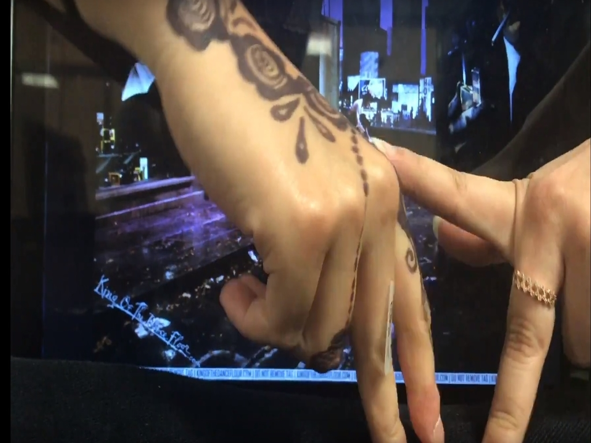
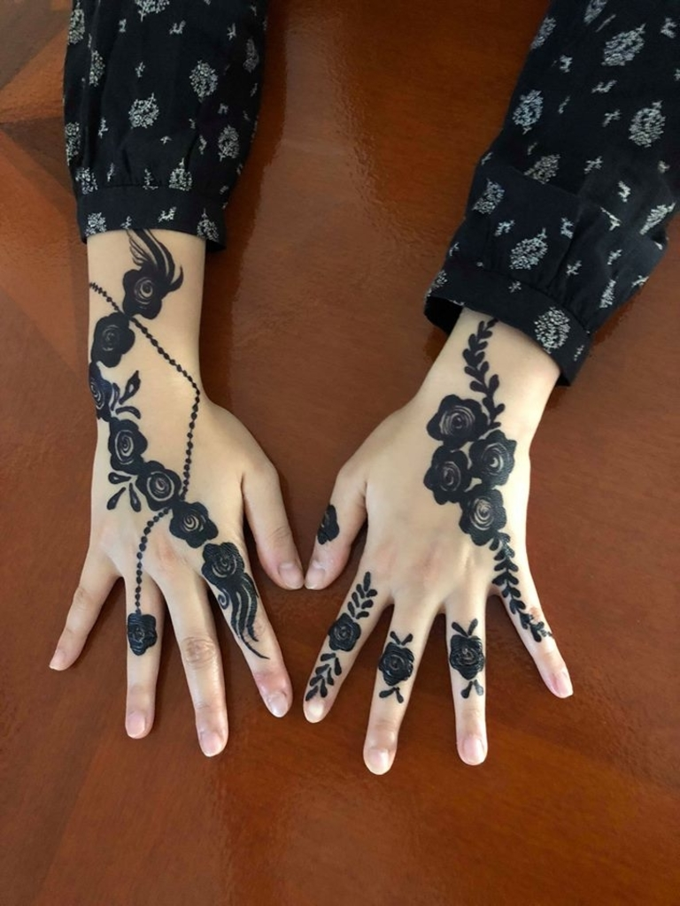

IDEAS

30 minute time limit was definitely a challenge, and brainstorming ideas was the hardest part. We wanted to convey short yet dramatic clip in a short time span, and so chose to film one based on song lyrics.
When Billie Jean came into our mind, we attempted to take a different approach - thus use our hands and their motions as the central element in the film. The story of once passionate lovers, now only left with detached cool, was now recreated body movements.
FILMING

A few trials were put into place - attempt in different hand moves to best deliver the emotions of the characters throughout the song. For Billie Jean we wanted to portray a seductive woman trying to coax The Man - thus necessary 'images' or props were needed.
We had a member with hennas on the hands, and so the role was given to her. Each character's traits were pulled out to the maximum through different mechanisms.
For the background we aimed to set a muffed tone: a quiet, dimly lighted street. The most effort was put into creating apt images of The Man - a man of stylish moves, outright rejection, and freedom.